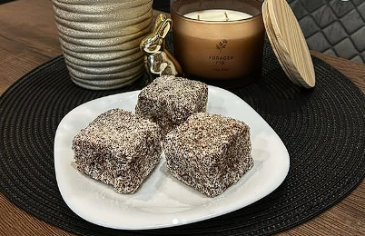
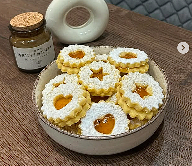

Kínálatunk
Kókuszkocka

Kókuszkocka recept
Ez egy egyszerű, finom, tejmentes kókuszkocka recept.
Hozzávalók
- 2 csésze kókuszreszelék
- 1 csésze zabpehely
- 1/2 csésze kókuszzsír
- 1/2 csésze juharszirup
- 2 evőkanál kakaópor (opcionális)
- csipet só
Elkészítés
- A kókuszzsírt felolvasztjuk és elkeverjük a juharsziruppal.
- Hozzáadjuk a kókuszreszeléket, zabpelyhet és a csipet sót.
- Ha szeretnéd, kakaóport is keverhetsz bele.
- Nyomkodd egy sütőpapírral bélelt formába, és hűtsd dermedésig.
- Szeleteld fel és tálald.
Piskótatekercs

Piskótatekercs recept
Hozzávalók és elkészítés klasszikus piskótatekercshez.
Hozzávalók
- 4 tojás
- 4 evőkanál cukor
- 4 evőkanál liszt
- 1 teáskanál sütőpor
- bármilyen lekvár/krém töltelék
Elkészítés
- Verjük fel a tojást cukorral parádés habbá.
- Óvatosan keverjük bele a lisztet és sütőport.
- Simítsuk egy sütőpapírral bélelt tepsibe, 180°C-on süssük 8-10 percig.
- Szórjuk meg cukorral, fordítsuk a konyharuhára, tekerjük fel a töltelékkel.
- Hűtve szeleteljük.
Linzer

Linzer recept
Egyszerű szélsebes linzer, mandulaaromával.
Hozzávalók
- 25 dkg liszt
- 15 dkg vaj
- 10 dkg porcukor
- 1 tojássárgája
- vanília + reszelt citromhéj
- lekvár a töltéshez
Elkészítés
- Gyorsan gyúrjuk össze a hozzávalókat tésztává.
- Hűtsük 30 percig, majd lisztezett felületen nyújtsuk ki.
- Szúrjuk ki formákat, 180°C-on 10-12 perc alatt süssük.
- Hűlés után kenjük lekvárral, helyezzük össze őket.